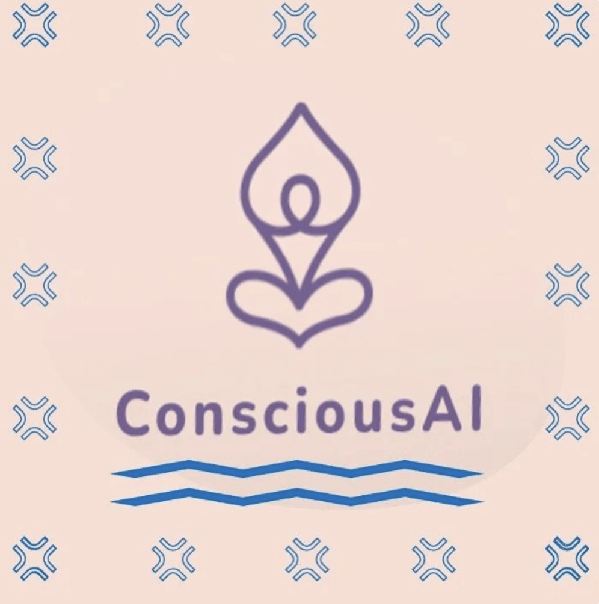

With the emergence of transformer architecture and homogenisation of this into Large Language Models, there has been a transformational change in the outlook of Generative AI and Artificial General Intelligence. Researchers, data scientists and industries are scrambling to commercialise and effectively leverage LLMs for increasing productivity. CEOs and top level managers are looking to cut costs by dehiring workforce which otherwise was being utilised for daily mundane chores. Low level developers are already threatened and signs of layoffs in the industry are visible. Technocrats are excited on the idea of ingenious application of LLMs to solve problems and revolutionise knowledge systems. The ripple effect is already visible with Gen AI courses being offered by Engineering and Management institutions. Enterprises are talking of enabling supply chain optimisation, fraud detection, customer and Human Resource management by leveraging LLMs and other Gen AI tools. The world is thus facing an ethical dilemma. There is lack of trust in genuine creativity, owing to the doubt in one’s mind that the product is a result of Gen AI rather than original work by a human being. Do we need to worry about this? I feel no; let’s embrace the technology and utilise it for creating enhancing our work by dedicating ourselves to creativity and to solving real world problems using these tools. We can view these tools as an advanced scientific calculator which leaves us with more time to ourselves to pause, contemplate and visualise solutions. I am of the opinion that the coming decade will witness accelerated growth in positive operationalisation of Gen AI towards a more cogent connected and evolved world. Some of the approaches to ensure fruitful and genuine utilisation of Allan’s and Gen AI a could be …. - [ ] Role of GANs - [ ] LLMs to evaluate other LLMs - [ ] NFTs for protecting genuine content - [ ] Deepfake detection - [ ] Authentic and synthetic discrimination using Trust based Framework.
I am Amit Oberoi. I have had an enriching journey of over 22 years on the way to learning Natural Language Processing (NLP), while experimenting with cross domain areas of Statistical Signal Processing, Detection and Estimation, Digital Signal Processing, Digital Image Processing and Machine Learning for 4G/5G. With primacy of core mathematical principles being steadfast, NLP is emerging as a creative application of these fundamentsl concepts.
Motivation for NLP
NLP being a branch of AI is a very special and an intruiging field of study. We envision Conscious AI wherein we will have glimpses of consciousness in AI algorithms, which will pave the way for intelligent applications and better human machine interfaces. For more on Conscious AI please see my blog site
My Github Repositories
Some of my work is available publicly at https://github.com/amitobe-code
StackExchange Activity and unsolved queries - soliciting your contribution.Attention is All You Need - The Transformer Architecture
One of the best explanations for the paper "Attention is all You Need is explained here
Comprehensive explanation on transformers for translation tasks is also available here
LLM Dilemma - the new Scientific Calculator (07 Dec 2023)
Strategies for utilising Emotions in NLP
For utilising emotions in text, there is a requirement of first discerning the corresponding emotion.
Once we have emotional information, we can make use of it to predict and assess the intention and context behind the piece of text.